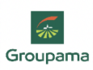
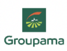

Engagés pour la formation professionnelle et l'éducation des jeunes ruraux dans le monde
La Fondation MFR Monde s’engage en faveur de la formation professionnelle de la jeunesse des territoires ruraux en France et dans le monde.
Découvrir la FondationFondation reconnue d’utilité publique (FRUP), nous soutenons la création, le fonctionnement et l’organisation de centres de formation sur le modèle des Maisons Familiales Rurales.
Faire un donNous co-finançons des projets de création ou de fonctionnement de centres de formation professionnelles de type MFR, et encourageons des projets de formation par alternance ou des projets éducatifs innovants mis en œuvre par des groupes de jeunes.
La Fondation MFR Monde a quatre objectifs :
- Soutenir les Maisons familiales rurales en France et dans le monde
- Participer au développement des territoires ruraux
- Accompagner les familles et les professionnels pour qu’ils s’investissent dans l’éducation de leurs enfants
- Valoriser la formation par alternance
Une MFR, c’est quoi ?
Centres de formation professionnelle par alternance, les Maisons Familiales Rurales proposent aux jeunes et aux adultes un modèle de formation alternatif pour s'élever, réussir et s'intégrer pleinement dans la société et le monde du travail.
Depuis 1935, les MFR forment les jeunes pour qu’ils développent des compétences professionnelles et des savoirs-faire, et les encouragent à développer leur savoir-être et leur citoyenneté pour leur permettre d'exercer un métier dans lequel ils pourront s'épanouir.
40
pays concernés1200
MFR engagées253
projets réalisésla fondation s’engage
Financer
pour permettre de soutenir les constructions ou les réhabilitations de bâtiments des MFR, la formation pédagogique des équipes éducatives, l’équipement des salles de classes, le versement d’aides ponctuelles aux élèves, l’appui à la vie associative et au fonctionnement administratif des centres. Elle soutient aussi les organisations nationales qui fédèrent les réseaux des MFR.
Soutenir
la création d’une MFR ou la mise en place d’un réseau national ou fédéral. Financement d’un diagnostic de territoires, prise en charge de la formation des futurs administrateurs et formateurs et des réunions de sensibilisation des familles et des professionnels, achat des équipements de base, paiement du salaire du futur directeur chargé d’animer et de conduire le projet, frais de recherche et d’ingénierie de formation...
Consolider
une ou plusieurs MFR existante(s). Prise en charge de la formation des administrateurs et des équipes et des frais liés à la vie associative, participation à l’amélioration des conditions d’internat, de restauration et d’enseignement, achats de petits équipements, matériels et documents pédagogiques, soutien de la fonction direction, formation des formateurs…
À quoi servent vos dons ?
En 2020/2021, pour 1 euro collecté auprès des donateurs, la Fondation MFR Monde a dédié 1,20 euros aux projets.
Plus d’un quart de la population du globe est âgé de moins de 15 ans. Cette population jeune, qui représente parfois près de la moitié de la population dans certains pays en développement, pose aux États un défi majeur d’éducation et de formation. Face à l’insuffisance de l’offre de formation en milieu rural, beaucoup de jeunes sont contraints à l’exode rural et viennent grossir les bidonvilles. Par leurs actions de formation par alternance en milieu rural et l’accompagnement à l’insertion professionnelle et à l’entreprenariat, les MFR dans le monde apportent une vraie contribution au développement des territoires et du pouvoir d’agir des jeunes et des adultes.
Faire un donSoutenez la fondation
Si vous partagez les valeurs humanistes des MFR, que vous voulez agir en faveur de l’Éducation et des territoires ruraux souvent délaissés, vous pouvez faire un don ou transmettre tout ou partie de votre patrimoine à la Fondation MFR Monde sous forme d’un legs, d’une donation ou comme bénéficiaire de votre assurance-vie.
Faire un donNos partenaires
 

Nos ressources

Statuts de la Fondation
Télécharger
Les rapports d’activité 2021
Télécharger
Charte éthique et code déontologique
Télécharger
Les rapports d’activité 2020
Télécharger
Le projet de la Fondation
Télécharger
Les rapports d’activité 2019
Télécharger
Les rapports d’activité 2019
Télécharger